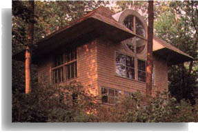

The Tucker House is small in size, but big in scale: its few parts are large and its form is simple and symmetrical.
The exterior exaggerates elements of the popular code such as the overhanging eaves and picture windows. These standard
signs are used in a self-conscious, ironic way, i.e. a common architectural language is used to send an uncommon message.
This makes it postmodern. Hoem's text accomplishes a similar feat.

Tucker House, Katonah, New York |
|
It is the extent to which the text employs narrative structures, rather than the structures themselves that makes it postmodern. |
Hoem's fiction accurately represents life in a small coastal town better than cold facts can, however true such facts may be. The text, like the Tucker house, uses standard components, but in unexpected proportions. Kjærleikens ferjereiser is postmodern in that it takes common tools like metafiction, multiple narrative levels,
| Narrative Levels |
| The implied author |
| "He who writes" |
The characters
|
decentralization, mise en abîme, etc.
There are narrators on each of the three narrative levels who seem to narrate parts of the text themselves. During the course of the text, there are innumerable shifts in narrator, often mid-chapter or mid-sentence. Characters from different narrative levels speak metaleptically to one another between all combinations of the three levels in the text. These metalepses self-consciously draw attention to their fictionality. By mixing levels, both of narration and of degrees of fictionality, Hoem draws attention to the process of creating fiction. He does this also by using instances of mise en abîme to raise discussions from the realm of one character's concern to general concern of the text as a whole. |
|